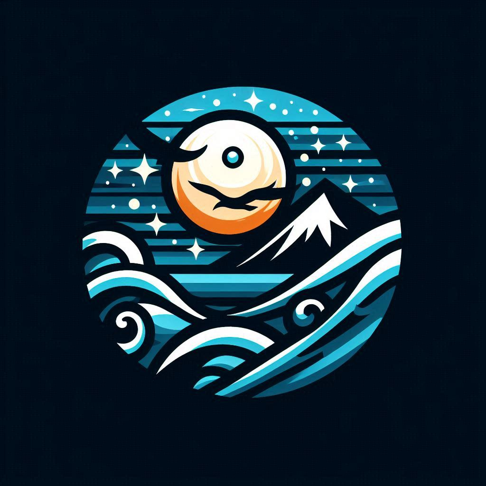

Ocean Guard
home
problemas
estudos
Ocean Guard
Link para o video
Ocean Guard
integrantes
Jessé Marques Mateus - RM559139
Lucas Gomes Tambasco - RM555220
Thiago dos Santos Cordeiro - RM555237
Conecte-se
Compartilhe e receba informações da nossa rede monitoramento marinho
Compartilhar